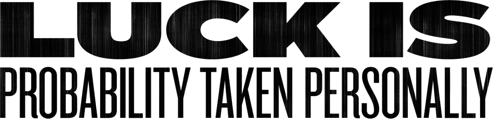

-
Stephen
-
Caver
-
8 December
-
California
-
AiCA — OC
-
Happy Cog
-
Designer/Developer
esigner-developer Stephen Caver has been interested in the inner workings
of the web since he was a kid. His attention to detail is evident in his site designs, which emphasize clean displays of content while facilitating great user experience. Stephen has experience in information architecture, interaction design,HTML and CSS. He has worked with clients such as the World Wide Web Consortium, Change.org and the Mozilla Creative Collective.
When he’s not designing beautiful websites, Stephen can be found passionately following the Los Angeles Dodgers, killing things on Xbox, and spending time watching history and science-based reality shows.